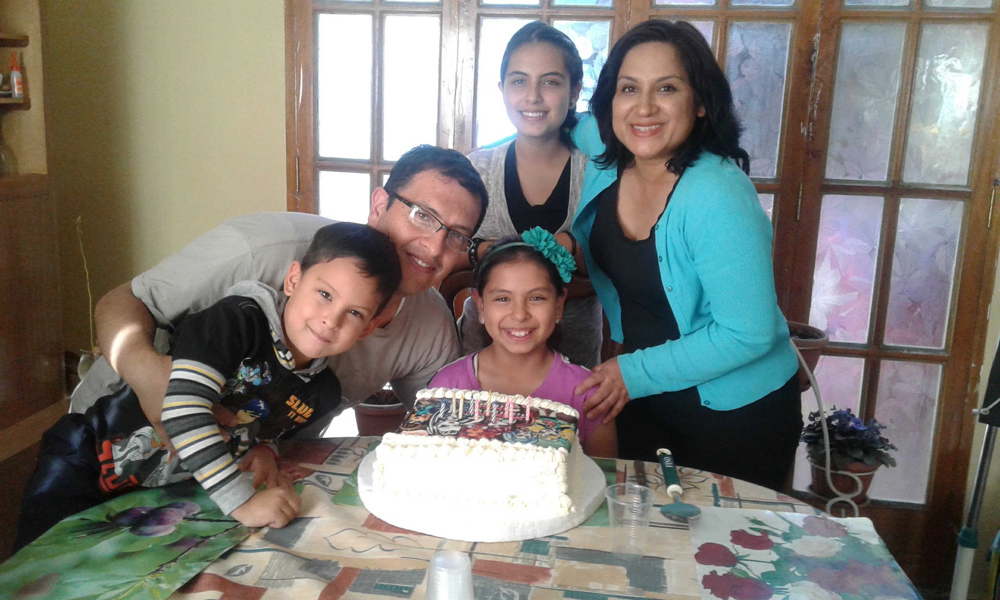

Hello dear team mates my name is Nestor Otondo I am from Bolivia currently I live in Tiquipaya, Cochabamba, Bolivia. I am 48 years old and I was married 26 years ago I have 3 children. I have hobbies like read ancient culture books and I like listening music almost every kind. I like learning about technology too. For me this is a challenge because this is a new beginning in my life, I feel to start from nothing, but I was learning on Pathway Connect Program all I have to do in my Heavenly Father.

This is my family
This picture was taken one year before pandemic time